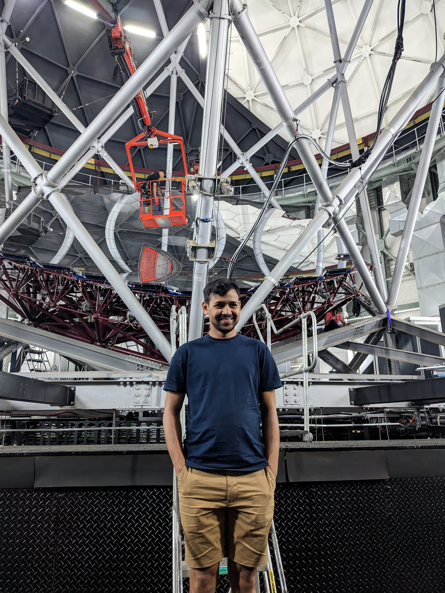

PhD Candidate in Astronomy & Astrophysics | [Tata Institute of Fundamental Research, Mumbai, India]
I am a PhD student in Astronomy and Astrophysics, studying young stars that undergo sudden accretion-driven outbursts. My research focuses on understanding the mechanisms triggering the outbursts. Understanding how star interacts with their disks has captivated me for some time now.
My work explores:
You can download my full CV here:
📧 Email: koshvendra1999@gmail.com
🏛️ Institution: [Tata Institute of Fundamental Research, Mumbai, India]
🌐 GitHub: https://github.com/KOSHVENDRA
🔗 ORCID: 0000-0002-7434-9681